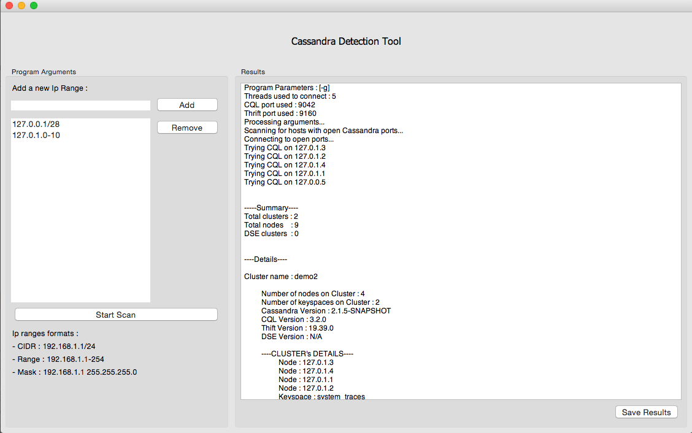

Created by Kévin Gallardo
| 1 | Apache Cassandra |
| 2 | DataStax Java Driver for Apache Cassandra |
| 3 | Cassandra Detection Tool |
| 4 | DSE Graph and Java Driver integration |
Distributed No-SQL database
Peer-to-peer architecture
Instant recovery
Data replication, evenly distributed
Multi Data centers supoprt, can always scale
DataStax Enterprise is the fully supported, customized and production-ready distribution of Apache Cassandra.
Goal : Establish connection to a cluster and send statements.
First topic of the internship : contribute to the awesomeness of the driver
Involved in the last 2.x versions : 2.0.10 ; 2.0.11 ; 2.1.7 ; 2.2
New Retry Policies, lots of improvements for the Object Mapper, expose Paging State API, Query Builder improvements, parity with C* 2.2 new features.
A bunch of bug fixes, a bit of test engineering.
And so on...
Why not provide a tool that makes a scan of a company's sub-network to detect all Cassandra/DSE clusters instances?
Meh, ok.
Let's do it efficiently, using nmap, multi-threading and the Java Driver, so a scan of a sub-network of 65,536 ip addresses takes less than 2 minutes.
Meh, ok.
And add a Graphic User Interface so it looks flawless and user friendly to Sales Teams.
You mean, like that?
And don't forget to make it compatible with Linux, Windows, and Mac OS.
Available here.
Collaborated with Martin Van Ryswyk.
The Graphter is coming.
The DataStax Java Driver has to adapt to survive.
Overview of the API :
Cluster cluster = Cluster.builder().addContactPoint("127.0.0.1").build();
GraphSession session = new GraphSession(cluster.connect());
GraphStatement gs = new GraphStatement("g.V()");
GraphResultSet grs = session.execute(gs);
for (GraphTraversalResult gtr : grs) {
System.out.println("gtr.get() = " + gtr.get("result").get("properties").get("name").get(0).get("value"));
}